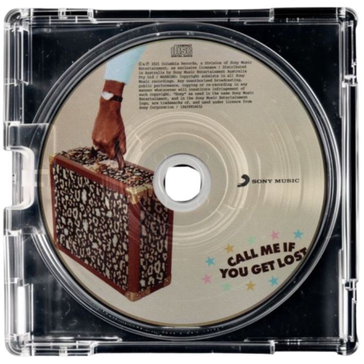

TALA'S PORTFOLIO
K08 | Potassium 2029 | CS3 Q2 // all pages best viewed full screen on PC

K08 | Potassium 2029 | CS3 Q2 // all pages best viewed full screen on PC

Hello! I'm Tala and this is my portfolio for different classworks in CS3 Q2. I decided to lock into my designs because I kept forgetting to make my previous one pretty. I love music (rap / pop / opm / musicals), frisbee & hiking, Chem, and the color blue (I don't know why my portfolio color scheme is green). Since we're studying HTML, my favorite fonts are Spectral, Lexend, and Libre Baskerville. I like serifs. I also like games like Minecraft, Pokemon, and Hades. Disclaimer: I did not animate any of the Pokemon sprites in my pages. They are all taken from the Pokemon Database

"sweet" - tyler, the creator